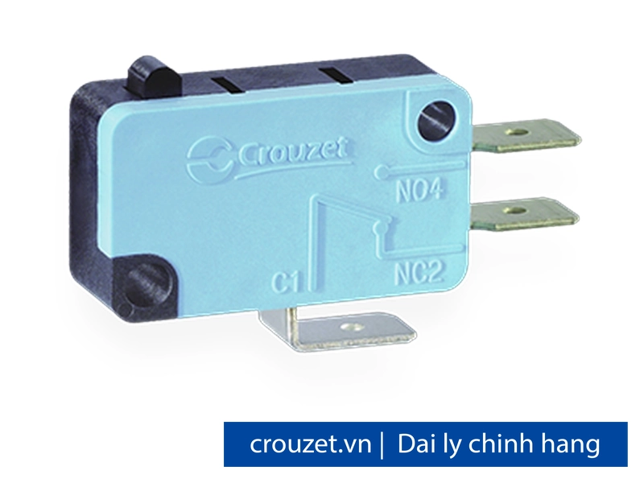
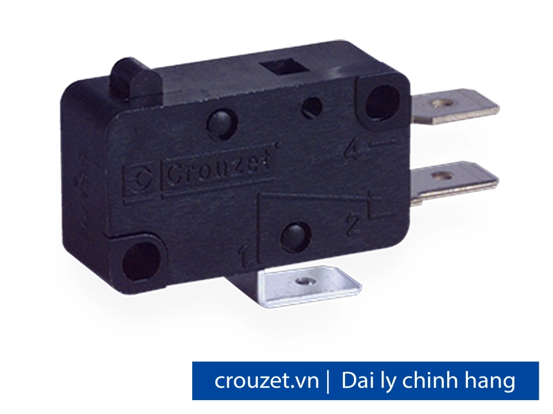
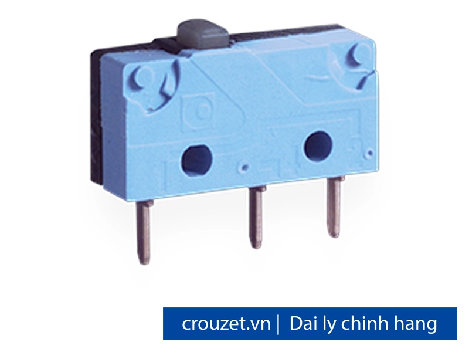
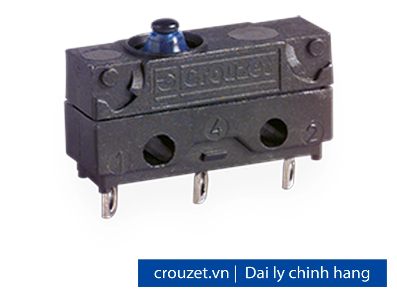
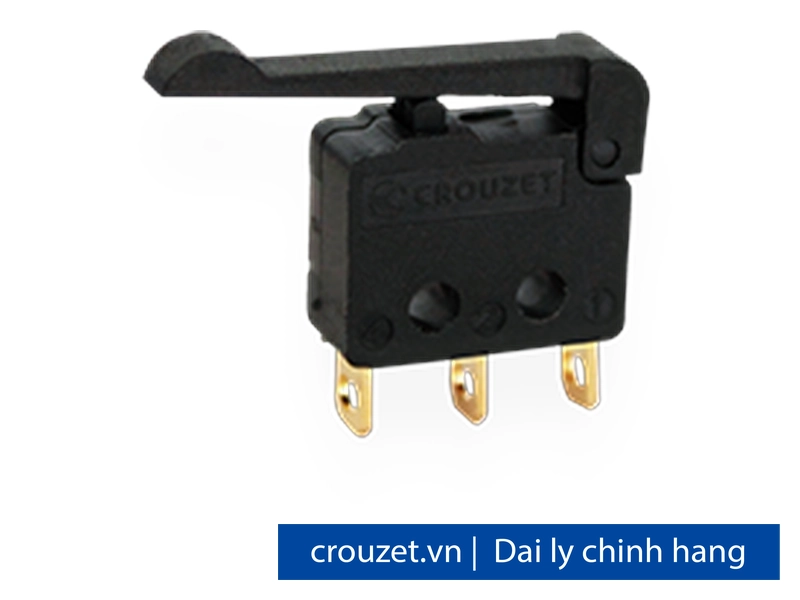
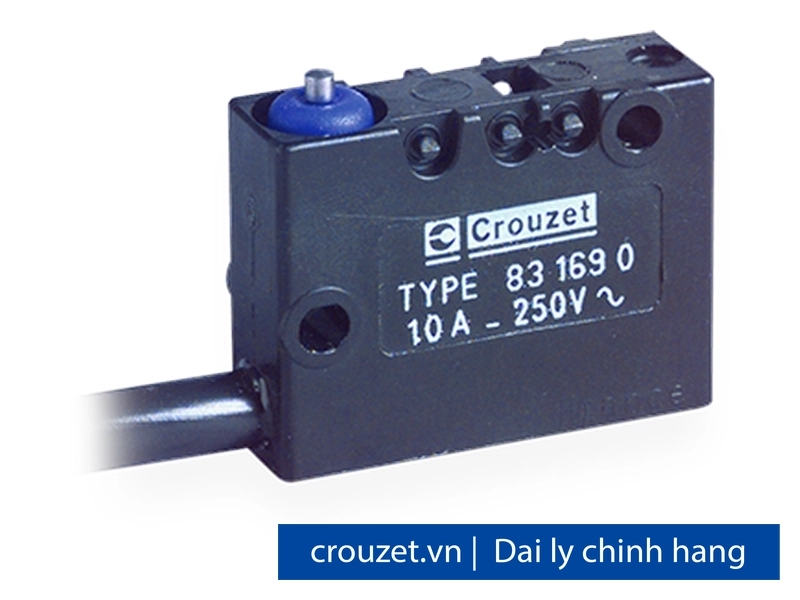

Công tắc vi mạch (Microswitch) Crouzet chính hãng
Công tắc vi mạch (microswitch) Crouzet chính hãng, phân phối bởi Fast Group tại Việt Nam. Đầy đủ dòng Miniature, Subminiature, Sub-subminiature và phiên bản Sealed/Positive Break — snap-action độ bền cao. Giấy tờ đầy đủ CO, CQ, hóa đơn VAT.

Các model microswitch Crouzet
Chọn model để xem thông số chi tiết và yêu cầu báo giá. Cần hỗ trợ chọn nhanh theo thông số kỹ thuật, gửi yêu cầu cho đội kỹ thuật Fast Group.

I – Changeover (SPDT) · Standard (831613)
I – Changeover (SPDT) · Standard (831613)
I – Changeover (SPDT) · Standard (831613)
I – Changeover (SPDT) · Standard (831613)
I – Changeover (SPDT) · Standard (831613)
I – Changeover (SPDT) · Standard (831613)
I – Changeover (SPDT) · Standard (831613)
I – Changeover (SPDT) · Standard (831613)
I – Changeover (SPDT) · High Force (831611)
I – Changeover (SPDT) · High Force (831611)
I – Changeover (SPDT) · Low Force (831614)
I – Changeover (SPDT) · Low Force (831614)
I – Changeover (SPDT) · Very Low Force (831615)
I – Changeover (SPDT) · Very Low Force (831615)
I – Changeover (SPDT) · Ultra Low Force (831615-SP4136)
I – Changeover (SPDT) · Wide Contact Gap (831616)
I – Changeover (SPDT) · Dual-current (831618)
I – Changeover (SPDT) · Dual-current (831618)
I – Changeover (SPDT) · Standard

Zb – Double Break, Separated Circuits · Standard (83250)
Zb – Double Break · Standard (83250)
Zb – Double Break · Standard (83250)
Zb – Double Break · Standard (83250)
Zb – Double Break · Standard (83250)
Zb – Double Break · High Force (83252)
Zb – Double Break · Dual-current (83254)

I – Changeover (SPDT) · Standard

I – Changeover (SPDT) · Sealed

I – Changeover (SPDT) · Standard
I – Changeover (SPDT) · Sealed
I – Changeover (SPDT) · High Accuracy
I – Changeover (SPDT) · Heavy Duty
Zb – Double Break, Positive Break · Positive Break

I – Changeover (SPDT) · Sealed
Zb – Double Break · Double Break
Zb – Double Break · Double Break
I – Changeover (SPDT) · Special
I – Changeover (SPDT) · Special Premium
I – Changeover (SPDT) · Protected
I – Changeover (SPDT) · Sealed Dual-current
I – Changeover (SPDT) · Standard
I – Changeover (SPDT) · Premium
Actuator – Flat Lever
Actuator – Flat Lever
Actuator – Roller Lever
Actuator – Roller Lever
Actuator – Telescopic Plunger
Housing
Nut
Logic đặt hàng microswitch Crouzet
| V3-83161 Microswitches | Type: 831613 | Function: C (NC) | Conn: W3R5 RAST5 | UL version | Actuator 161E R13.6 | Pos B | Adaptation SP9680 |
| Ví dụ — V3-83161 Microswitches | 831613 C W3R5 UL 161E R13.6 B SP9680 |
| V3 Dual-current 83161 | Type: 831618 | Function: C | Conn: W6A5 | UL | Actuator 161L | Nut phụ kiện 70602118 |
| Ví dụ — V3 Dual-current 83161 | 831618 C W6A5 UL 161L SP9680 + 70602118 |
| PBX-8325R Microswitches | 83250=Standard; 83252=High Force; 83254=Dual-current; 83255=Dual-current High Force | 000=IP40 | 200=IP67 |
| Ví dụ — PBX-8325R Microswitches | 83250200 = PBX Standard IP67 W3 | 83252000 = High Force IP40 W3 |
Cần tư vấn chọn microswitch?
Gửi yêu cầu kỹ thuật và số lượng — nhận đề xuất model kèm báo giá và datasheet.